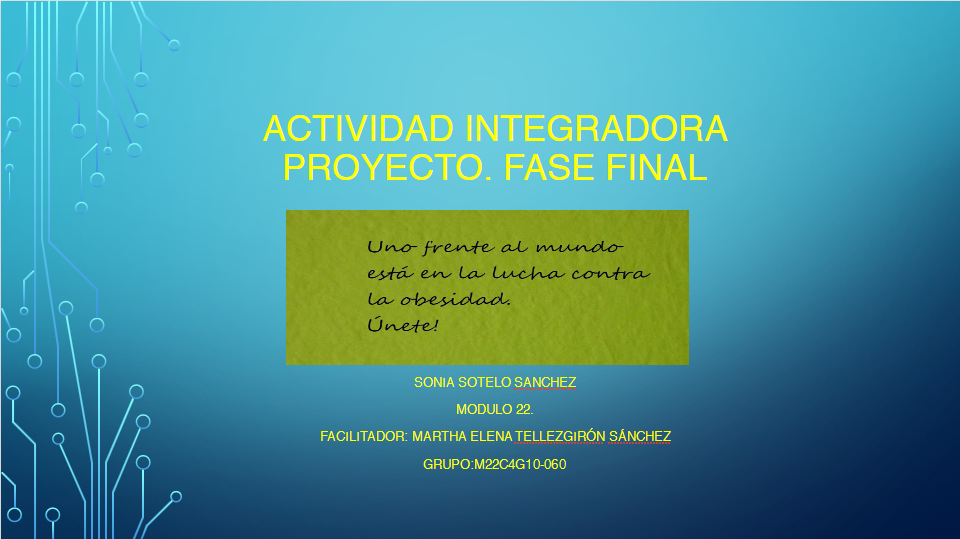

1. Fase uno: Diagnostico. Identificación del proyecto
Archivo PowerPoint2. Fase dos: Diagnostico. Causas y consecuencias
Archivo PowerPoint3. Fase tres. Contextualización. Comparo para mejorar
Archivo en PowerPoint4. Fase cuatro. Contextualización. Objetivos
Archivo en Word5. Fase cinco. Planificación. Estrategias de solución
Archivo en Word6. Fase seis. Planificación. Rutas de Acción
Archivo en PowerPoint7. Fase siete. Análisis de mi proyecto Módulo 22 semana 4.